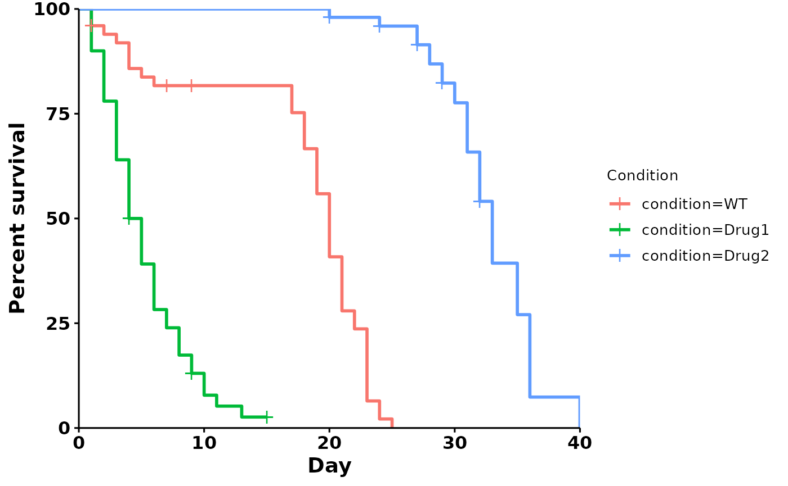
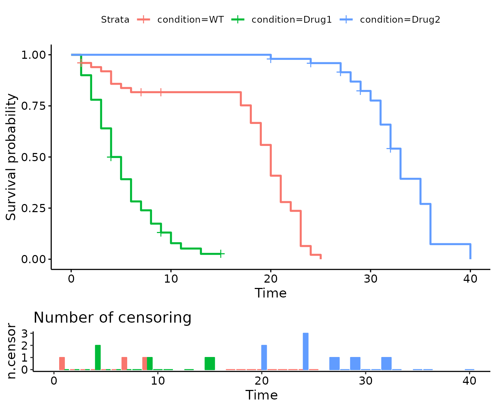
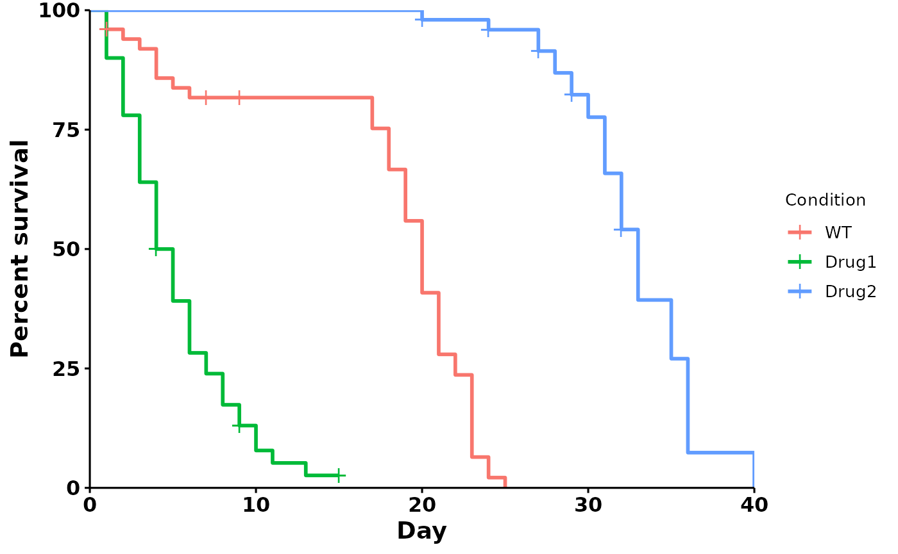

interfacing-with-other-packages.RmdTwo of the most popular packages for survival analysis are survival
and survminer.
This vignette will demonstrate how to use ggbulksurv’s
output as input to other survival packages.
We first start by documenting the three functions that
run_bulksurv() wraps around. At each stage, we demonstrate
how this can be used as input to other packages for the advanced
user.
library(ggbulksurv)
library(survival)
library(survminer)
#> Loading required package: ggplot2
#> Loading required package: ggpubr
#>
#> Attaching package: 'survminer'
#> The following object is masked from 'package:survival':
#>
#> myelomaThe run_bulksurv() command makes several choices for the
user, with the caveat that these assumptions tend to hold under most
conditions. Users who desire total control over the process should read
this section for a more detailed walkthrough.
run_bulksurv() is a wrapper around the 3 following
functions:
get_indiv_surv: Converts a bulk survival table into an
individual survival table.fit_surv: Fits a survival object from
survival::survfit().plot_surv: Plots a survival curve using
survminer::ggsurvplot().This section takes you through the 3 steps that
run_bulksurv() wraps around.
# Load lifespan data
data(sample_data)
dat <- sample_data
# To read in your own data, remove the # from the following line of code:
# dat <- read_csv("your-lifespan-data.csv")get_indiv_surv converts a table of bulk survival data
into individual survivals. Each row now represents an individual.
day represents the number of days lived, while
status is either 0 (censored) or 1 (dead).
# Convert to one individual per row
df_isurv <- get_indiv_surv(dat,
sample_order = c("WT", "Drug1", "Drug2"))
#> Joining with `by = join_by(x, condition, day, sex, status)`
head(df_isurv)
#> # A tibble: 6 × 5
#> x condition day sex status
#> <int> <fct> <int> <chr> <dbl>
#> 1 2 WT 1 M 0
#> 2 2 WT 1 M 1
#> 3 2 WT 1 M 1
#> 4 28 Drug1 1 M 1
#> 5 28 Drug1 1 M 1
#> 6 28 Drug1 1 M 1We now have a tibble with one individual per row.
At this point, this data can be used as input to other packages, such
as survminer() and survival.
fit_surv creates a survfit object for
day and status, then fits a survival curve by
condition. It takes in a data.frame with one
individual per row, and creates a survfit object using the
survival::survfit() function.
# Fit survival object
df_fit <- fit_surv(df_isurv)
#>
#> call: formula = Surv(day, status) ~ condition
head(df_fit)
#> Call: survfit(formula = Surv(day, status) ~ condition, data = df_isurv)
#>
#> n events median 0.95LCL 0.95UCL
#> condition=WT 50 47 20.0 19 21
#> condition=Drug1 50 46 4.5 4 6
#> condition=Drug2 50 42 33.0 32 35Interpretation: Drug1 has the shortest median lifespan of 4.5 days, with a 95% confidence interval (95% CI) of 4 to 6 days. In contrast, Drug2 has the longest median lifespan of 33 days, with a 95% CI of 32 to 35 days.
Alternatively, you can fit this manually using the
survival package:
# Fit survival object
df_fit <- survival::survfit(Surv(day, status) ~ condition,
data = df_isurv)
head(df_fit)
#> Call: survfit(formula = Surv(day, status) ~ condition, data = df_isurv)
#>
#> n events median 0.95LCL 0.95UCL
#> condition=WT 50 47 20.0 19 21
#> condition=Drug1 50 46 4.5 4 6
#> condition=Drug2 50 42 33.0 32 35plot_surv is a wrapper around [survminer::ggsurvplot()].
As such, all additional arguments passed to plot_surv will
be passed to survminer::ggsurvplot().
# Using ggbulksurv
df_isurv <- get_indiv_surv(dat,
sample_order = c("WT", "Drug1", "Drug2"))
#> Joining with `by = join_by(x, condition, day, sex, status)`
df_fit <- fit_surv(df_isurv)
#>
#> call: formula = Surv(day, status) ~ condition
plot_surv(fit = df_fit,
type = "survival",
data = df_isurv)
Alternatively, you can construct your own plots using
survminer::ggsurvplot:
df_isurv <- get_indiv_surv(dat,
sample_order = c("WT", "Drug1", "Drug2"))
#> Joining with `by = join_by(x, condition, day, sex, status)`
df_fit <- fit_surv(df_isurv)
#>
#> call: formula = Surv(day, status) ~ condition
survminer::ggsurvplot(fit = df_fit,
data = df_isurv,
ncensor.plot = TRUE # add censor plot
)
ggbulksurv also provides functions to return data if you
wish to use it in a different pipeline. Use the
returnData = TRUE parameter to return everything as a
list.
df_survival <- run_bulksurv(dat, returnData = TRUE)
#> Joining with `by = join_by(x, condition, day, sex, status)`
#> call: formula = Surv(day, status) ~ condition
#> call: formula = Surv(day, status) ~ condition
class(df_survival)
#> [1] "list"
names(df_survival)
#> [1] "data" "plot" "median_survival" "logrank"
#> [5] "pairwise"
head(df_survival)
#> $data
#> # A tibble: 150 × 5
#> x condition day sex status
#> <int> <fct> <int> <chr> <dbl>
#> 1 2 WT 1 M 0
#> 2 2 WT 1 M 1
#> 3 2 WT 1 M 1
#> 4 28 Drug1 1 M 1
#> 5 28 Drug1 1 M 1
#> 6 28 Drug1 1 M 1
#> 7 28 Drug1 1 M 1
#> 8 28 Drug1 1 M 1
#> 9 3 WT 2 M 1
#> 10 29 Drug1 2 M 1
#> # ℹ 140 more rows
#>
#> $plot
#>
#> $median_survival
#> Call: survfit(formula = Surv(day, status) ~ condition, data = df_isurv)
#>
#> n events median 0.95LCL 0.95UCL
#> condition=WT 50 47 20.0 19 21
#> condition=Drug1 50 46 4.5 4 6
#> condition=Drug2 50 42 33.0 32 35
#>
#> $logrank
#> Call:
#> survival::survdiff(formula = Surv(day, status) ~ condition, data = df_isurv)
#>
#> N Observed Expected (O-E)^2/E (O-E)^2/V
#> condition=WT 50 47 31.2 7.94 12.9
#> condition=Drug1 50 46 12.5 89.99 128.1
#> condition=Drug2 50 42 91.3 26.60 123.3
#>
#> Chisq= 186 on 2 degrees of freedom, p= <2e-16
#>
#> $pairwise
#>
#> Pairwise comparisons using Log-Rank test
#>
#> data: df_isurv and condition
#>
#> WT Drug1
#> Drug1 2.3e-14 -
#> Drug2 < 2e-16 < 2e-16
#>
#> P value adjustment method: BH